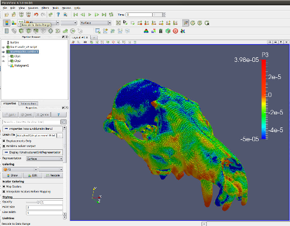

VoxFE voxel-based FE help

This plugin adds support for VoxFE Finite Element Modelling to ParaView.
---
Documentation has been created in Dr Explain and does not (yet) open in ParaView...
we recommend you open the user guide (
doc/html/index.htm) in your favourite browser so that it copes with the JavaScript (etc) menus. You can find the guide in various forms :
*) pdf: doc/UserGuide.pdf
*) html: doc/html/index.html
---
VoxFE Team, School of Engineering, University of Hull